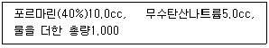

사진기능사 (2005-10-02 기출문제)
1과목: 사진일반
1. 빛의 파장에 관한 설명으로 맞는 것은?
- 푸른 계열의 빛이 단파장광에 속한다.
- 붉은 계열의 빛이 단파장광에 속한다.
- 단파장이 장파장광에 비해 붉은색을 띠고 있다.
- 장파장광이 단파장광에 비해 산란이 심하다.
(정답률: 71%)

2. 검정배경지 위에 작은 흰색지의 대비 실험은?
- 명도대비
- 색상대비
- 채도대비
- 보색대비
(정답률: 86%)
3. 특히 밝은 색과 어두운색이 접하는 부분에서 일어나는 대비 현상은?
- 보색대비
- 동시대비
- 연변대비
- 계속대비
(정답률: 50%)
4. 산업재해를 조사 하는 주된 목적으로 적합한 것은?
- 같은 종류의 재해가 되풀리 해서 일어나지 않도록 하기 위해
- 책임 추궁을 하기 위해
- 재해를 조사하여 보고서를 작성하기 위해
- 재해가 발생한 사업장의 사업주를 고발하기 위하여
(정답률: 88%)
5. 일반적으로 굴절에 가장 많은 영향을 받을 수 있는 사진은?
- 유리제품사진
- 나무제품사진
- 고무제품사진
- 종이제품사진
(정답률: 98%)
6. 파장이 가장 긴 파장대의 색상은?
- 청색
- 녹색
- 보리색
- 빨강색
(정답률: 84%)
7. 녹색잎이 눈과같은 흰색으로 표현되며 태양직사광 상태의 풍경사진에서 청색하늘을 검게 나타내기위해 사용되는 필름은?
- 흑백복사용 필름
- X레이 필름
- 적외선 필름
- 리스 필름
(정답률: 69%)
8. 색온도를 가장 정확히 설명한 문항은?
- 광원이 가진 열
- 광원의 밸런스
- 광원의 양을 나눈 기준치
- 광원의 분광분포를 절대 온도 단위로 규정
(정답률: 83%)
9. 컬러사진에 희미한 노란색이 전체적으로 도는 가장 큰 이유는?
- 정착액의 농도가 강하다.
- 정착액의 피로해졌다.
- 현상시간이 길다.
- 현상액의 농도가 약하고 수세시간이 길다.
(정답률: 52%)
10. 컬러사진의 유제층 발색 중 맞는 것은?
- 녹감성 - 블루(blue) 발색
- 녹감성 - 옐로우(yellow) 발색
- 녹감성 - 시안(cyan) 발색
- 녹감성 - 마젠타(magenta) 발색
(정답률: 61%)
11. 페닝(Panning)효과가 가장 많이 발생하는 조건은?
- 느린 셔터속도와 렌즈의 이동
- 보통 셔터속도와 렌즈의 이동
- 빠른 셔터속도와 렌즈의 고정
- 보통 셔터속도와 렌즈의 고정
(정답률: 67%)
12. 프린트한 인화지에 검은 스크레치선이 있다면 가장 큰 원인이 되는 것은?
- 거칠게 다루므로서 일어나는 네가티브 유제층에 난 스크레치
- 오출하기 전에 먼지가 필름위에 묻었을 때
- 네거티브,인와프레임유리,유리네가티브,케리어 위에 세밀한 먼지가 묻었을 때
- 기름기가 있거나 지문이 캐리어에 묻었을 때
(정답률: 69%)
13. 상반측 불궤의 법측을 가장 잘 설명한 것은?
- 현상시 교반의 불규칙으로 화상에 얼룩이 생기는 현상
- 노광량이 증가 될수록 감광재료의 농고 역시 정비례로 증가되는 현상
- 1초 이상의 저속 촬영이나 낮은 조도에서 촬영시 노출 부족이나 색 균형이 좋지 않게 되는 현상
- 스트로보를 이용한 저속 촬영 시 셔터막의 불규칙한 움직임으로 노출 얼룩이 생기는 현상
(정답률: 54%)
14. 광원에 따라 물체의 색이 달라져 보이는 것과는 달리, 분광 반사율이 다른 두가지의 색이 어떤 광원 아래에서는 같은 색으로 보이는 경우가 있는데 이러한 현상을 무엇이라 하는가?
- 조건등색(條件等色)
- 간섭색(干涉色)
- 광원색(光源色)
- 조명색(照明色)
(정답률: 79%)
15. 색지각(色知覺 color perception)에 있어서 빛은 필수 조건이다. 빛에 대한 설명중 올바른 것은?
- 뉴톤(Newton)은 빛의 파동설(波動說)을 주장하였다.
- 보통 빛이라고 하는 것은 380nm~780nm의 가시광선(可視光線)을 말한다
- 빛의 파장(波長)이 짧을수록 굴절율(屈折率)이 적다.
- 호이겐스(Huygens)는 빛의 광입자설(光粒子設)을 주장하였다.
(정답률: 78%)
16. 확대 인화시 노광시간의 결정에 영향을 미치는 요소가 아닌 것은?
- 전원의 전압변동
- 렌즈의 초점거리
- 확대배율
- 네거티브의 농도
(정답률: 50%)
17. C-41 발색 현상 과정의 온도는?(단 허용 오차는 ±0.15˚C이다.)
- 24˚C
- 30˚C
- 38˚C
- 47˚C
(정답률: 50%)
18. Rc 인화지를 가장 잘 설명한 것은?
- 종이 양면에 식물성 수지나 폴리에틸렌 수지를 코팅하고, 그위에 감광 유제를 입힌 것
- 바라이트층 중간에 폴리에틸렌이나 아크릴로 도포 되어 있다.
- 바라이트층이 없고, 원지의 양면에 폴리에틸렌이나 아크릴로 도포되어 있다.
- 유제층 위에 폴리에틸렌이나 아크릴로 도포되었다.
(정답률: 60%)
19. 사진필름을 촬영한 후 현상할 때까지의 기간은?
- 빠를수록 좋다.
- 늦어도 영향이 전혀 없다.
- 기간에는 관계없으나 따듯하게 보관한다.
- 1개월간 상온에 보관한다.
(정답률: 93%)
20. 다음중 가장 고감도 필름은?
- ISO 32
- ISO 50
- ISO 100
- ISO 400
(정답률: 78%)
2과목: 사진재료 및 현상
21. MQ(메톨, 하이드로 퀴논)현상약에 비해 PQ(페니돈, 하이드로키논)현상약의 특성 중 가장 올바른 것은?
- MQ현상약에 비해 피로도가 높다.
- MQ현상약에 비해 입상성이 크다.
- MQ현상약에 비해 콘트라스트가 강하다.
- MQ현상약에 비해 증감능력이 좋다.
(정답률: 49%)
22. 다음에 감광성 물질로 사용할 수 없는 것은?
- Agl
- AgBr
- AgCl
- AgF
(정답률: 65%)
23. 보통촬영용 필름(film)의 지지체로서 많이 사용되고 있는 재료는?
- 폴리에틸렌(PE)
- 아크릴(Acryl)
- 셀룰로오즈트리아세태이트(cellulose triacetate)
- 폴리스틸렌(PS)
(정답률: 70%)
24. 필름 현상을 위한 물의 조건 중 옳지 않은 것은?
- 현상액(devoloper)을 만들때는 증류수가 좋다.
- 일반적으로 흐르는 물에서는 고감도 필름보다 저검도 필름 수세 효율이 높다.
- 최종적인 필름 수세를 위해서 사용한다.
- PH농도가 7을 넘는 알카리성 물은 필름 현상 시간을 연장시켜 준다.
(정답률: 67%)
25. 다음 처방과 관계있는 것은?

- 현상보력
- 정착액보충
- 현상액보충
- 경막처리
(정답률: 37%)
26. 네거티브컬러 필름의 현상후 황색(yellow)이지미로 발색된 것은 현상전에는 어떤 유제층이었는가?
- 적감유제층
- 녹감유제층
- 청감유제층
- 흑감유제층
(정답률: 70%)
27. 현상된 네가티브의 농도와 콘트라스트를 떨어 뜨리기 위해 사용되는 감력제는?
- 붕사
- 적형염
- 중크롬산칼륨
- 승홍
(정답률: 49%)
28. 정착액에 대한 설명중 잘못된 것은?
- 필름 정착액은 유제에 남아있는 할로겐화은을 제거하는 역할을 한다.
- 정착시간을 너무 길게 해서는 안된다.
- 정착된 후에도 필름은 빛에 강하게 반응한다.
- 정착 주약은 티오황산나트륨이다.
(정답률: 62%)
29. 현상액(developer)의 조제약으로 사용되는 보항제는?
- 탄산나트륨 Na3Co3)
- 탄산칼슘(K2Co3)
- 수산화나트륨(NaOH)
- 아황산나트륨(Na2SO3)
(정답률: 70%)
30. 롤필름과 커트필름용 카메라에 속사성을 부여하기 위해 제조된 것으로 보도사진 관계에 주로 사용하며 부피와 무게를 적게하고 연석촬영이 가능하도록 제작된 특수 필름은?
- 팩 필름
- 110롤필름
- 9mm롤필름
- 디스크필름
(정답률: 40%)
31. 릴리즈(Release)는 특히 어떤 경우에 필요한가?
- 소형카메라
- 중형카메라
- 저속도카메라.
- 고속도카메라.
(정답률: 60%)
32. 다음 흑백 필터중 노란색을 밝게하고 청색(Blue)을 악제하는 필터는?
- UV 필터
- Y3 필터
- 스카이라이트 필터
- B 필터
(정답률: 46%)
33. ISO 100/21/ 일 때 Guide Number가 40인 전자플레시로 5m 거리의 피사체를 촬영하고자한다 다음중 가장 적당한 F값은?
- F/11
- F/5.6
- F/8
- F/4
(정답률: 89%)
34. 컬러 필름으로 구름이 있는 풍경을 촬영할 때 흰구름과 푸른 하늘을 분명하게 분리하는 역할을 가장 잘해 줄수 있는 필터는?
- UV
- PL
- ND
- FL
(정답률: 63%)
35. 노출계를 사용하여 노출을 측정하는 방법중 브래킷(bracket)방법을 가장 잘 설명 한 것은?
- 어두운 장면과 밝은 장면을 측정하여 두 경과를 평균낸다.
- 회색카드(gray card)를 이용한다.
- 어두운 부분을 측정하여 노출을 2단계 덜 준다.
- 적정 노출을 측정하여 각 한단계씩 가감하여 3커트를 촬영한다.
(정답률: 65%)
36. 입사광식 노출계와 관계가 있는 수광부는 몇도로 설계 되었는가?
- 30도
- 50도
- 80도
- 180도
(정답률: 73%)
37. 카메라에 내장되어 있는 TTL노출계는 주로 어떤 측정 방식인가?
- 입시광식 측정
- 투과 및 입사광식 측정
- 반사광식 측정
- 반사입사광식 병합 측정
(정답률: 59%)
38. 텅스텐(Tungsten)타입의 필름으로 촬영할 때 알맞은 색온도는?
- 2500K
- 3200~3400K
- 4000~4500K
- 5800K
(정답률: 78%)
39. 렌즈 후드 선택시 가장 주의할 점은?
- 렌즈의 밝기
- 렌즈의 구경
- 렌즈의 길이
- 렌즈의 화각
(정답률: 72%)
40. 포컬플레인 셔터(Focal plane shutter)가 렌즈셔터 (L둔 shutter)에 비해 유리한 점은?
- 기구 전체가 커서 많은 장소를 차지한다.
- 스트로보가 고속셔터에 동조가 되지 않는다.
- 고속셔터시 렌즈셔터보다 빠른 셔터를 사용할 수 있다.
- 고속 피사체 촬영시 화상이 변형된다.
(정답률: 65%)
3과목: 사진기계 및 촬영
41. 시차교정 장치는 특히 어떤 종류의 카메라에 필요한가?
- 일안반사식카메라
- 대형뷰카메라
- 스테레오카메라
- 거리계연동식카메라
(정답률: 69%)
42. 카메라의 렌즈를 통과하는 빛의 양을 조절하는 것은?
- 조리개
- 렌즈후드
- 해상력
- 컨버트
(정답률: 87%)
43. TTL 측광에서 f/1.4로 100% 투과율일 때 f/2.8에서의 투과율은?
- 20%
- 25%
- 30%
- 50%
(정답률: 47%)
44. 일반적으로 화각이 63도에서 102도 정도의 넓은 화각을 가진 렌즈는?
- 표준렌즈
- 광각렌즈
- 망원렌즈
- 줌렌즈
(정답률: 88%)
45. 플래시 동조에 필요한 M접점은 다음중 어떤 경우에 사용되는가?
- 스트로보
- 마그네슘 섬광분(magnesium 閃光粉)
- 포컬플레인 셔터의 플래시 벌브
- 렌즈 셔터의 플래시벌브
(정답률: 34%)
46. 마이크로 접사를 하려고 한다. 렌즈 자체에 있는 경통을 모두 사용해도 초점이 맞지 않는다. 이때 초점을 맞출수 있게 사용하는 도구는?
- 모노레일
- 벨로우즈
- 마운트 블록
- 스텐다드
(정답률: 89%)
47. 전자플래시의 일종으로 정면광을 사용해도 한쪽으로 그림자가 치우치지 않고 피사체의 주변을 감싸는 것 같은 그림자가 생기는 조명은?
- 오토 플래시
- TTL 플래시
- 링 플레시
- 전용 플레시
(정답률: 83%)
48. 카메라에 TTL(Through The Lens)이란?
- 렌즈를 통해서 들어온 빛을 측정하는 방식
- 텡스텐 촬영시 노출 측정 용어
- 입시식 노출 측정 방식
- 스트로보 노출용 측정 방식
(정답률: 85%)
49. SDP(Silicon photo-diode)는 무엇인가?
- 셔터 스피드
- 수광소자
- 속도 미터기
- 고감도 기호
(정답률: 79%)
50. F/5.6은 f/11에 비해 얼마나 많은 양을 허용하는가?
- 2배
- 4배
- 6배
- 8배
(정답률: 65%)
51. 컬러 사진용 확대기의 컬러 헤드 방식에 대한 설명으로 옳은 것은?
- 할로겐 램프와 다이크로익 필터, 그리고 혼광장치의 세부분으로 구성한다.
- 색보정에 따른 노광시간과 필터조정등의 변동이 크다.
- 컬러사진인하에 가장 합리적인 집광식을 택하고 있다.
- 프린트시 얼룩의 위험이 많이 있다.
(정답률: 38%)
52. 시프트(shift) 스윙(swing), 틸트(tilt)등은 주로 어떤 종류의 카메라에서 가능한가?
- 파노라마 카메라
- 폴라로이드랜드 카메라
- 뷰 카메라
- 인스타매틱 카메라
(정답률: 74%)
53. 설경 또는 바닷가에는 UV필터를 사용하는 것이 효과적이라고 한다. 그 이유를 가장 바르게 설명한 것은?
- 반사광과 바닷바람에 섞인 엽분을 제거하기 위해서
- 대기중의 자외선을 차단하여 선명한 화상을 얻기 위하여
- 공기가 맑기 때문에 과다 노출을 막기 위하여
- 바닷바람에 의하여 습기가 생기는 것을 막기 위하여
(정답률: 89%)
54. 노출계의 유백색 반구를 수광부에 결합하여 피사체 위치에서 피사체로 입사되는 빛의 양을 측정하는 노출 측정법은 무엇인가?
- 스포트 측정법
- 입시식 측정법
- 그레이카드 측정법
- 백색 반사판 측정법
(정답률: 73%)
55. 포컬플래인 셔터방식과 가장 거리가 먼 것은?
- 선막과 후막의 주행차에 의한 간격에 의해노출한다.
- 고속셔터를 이용할 수 있다.
- 렌즈의 교환이 용이하다.
- 중심부에서 주변부로 셔터막이 열린다.
(정답률: 55%)
56. 필터를 세등분하여 양측면을 구면으로 만든 필터로 중앙부의 상은 선명하고 양측면상은 흐리게 묘사되는 35mm 카메라 표준렌즈용 특수 필터는?
- center image 필터
- Linear focus 필터
- color image 필터
- cromo 필터
(정답률: 56%)
57. 플래시라이트(Electronic flash light)에 대한 설명으로 가장 옳은 것은?
- 발광 지속 시간이 길어서 피사체의 움직임에 따른 흔들림이 발생된다.
- 광량 조절이 어렵고 태양광 아래에서 사용이 불가능하다.
- 색온도가 자연광에 가깝기 때문에 데이라이트필름 사용이 가능하다.
- 발광에 따른 열발생이 높고 부피가 큰 것이 단점이다.
(정답률: 71%)
58. 컬러촬영시 그늘과 그림자는 어떤색을 많이 띄고 있는가?
- 청색(blue)
- 적색(red)
- 초록색(green)
- 노랑색(yellow)
(정답률: 75%)
59. 발광 피크 타임(pack time)이 없으면서 연소되는 플래시 벌브는?
- M급
- S급
- F급
- FP급
(정답률: 55%)
60. 사진렌즈 중 광각렌즈와 관계가 있는 것은?
- 화각이 60도 보다 좁은 렌즈
- 피사계심도가 얕은 렌즈
- 피사계심도가 깊은 렌즈
- 장초점 렌즈
(정답률: 75%)